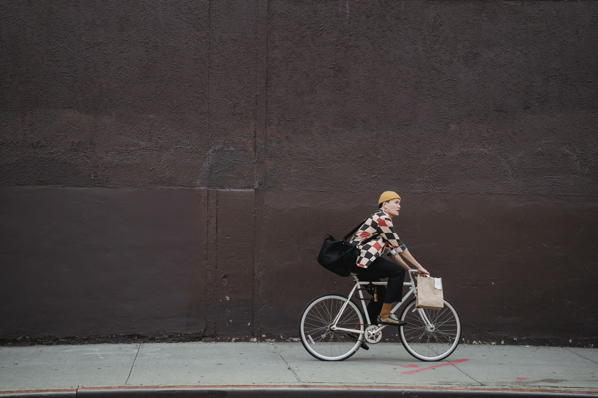

Start with the journey
A nearby document or shop order does not always need a large vehicle. Check the package size, route access and recipient availability before choosing how it travels.
Think beyond the doorstep
Bicycles have no combustion exhaust during the trip. Equipment, maintenance and energy use still matter, so sustainability should be described with care rather than invented savings.
Make the handoff work
A reachable sender and recipient help avoid repeated attempts. Clear entry notes and sensible packaging can make the last mile easier for everyone.
Build a useful routine
Review which of your regular local trips are suitable for bicycle delivery. Start small, listen to feedback and expand only when the route remains safe and dependable.